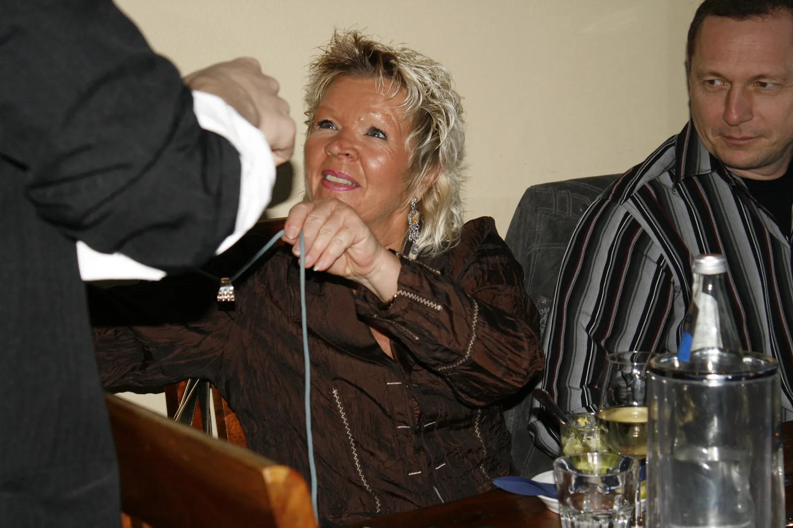
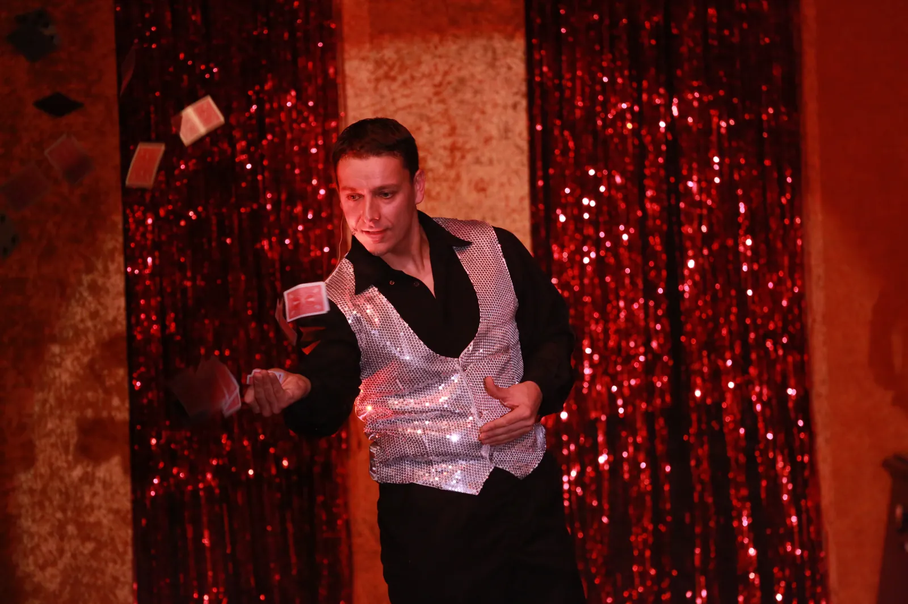
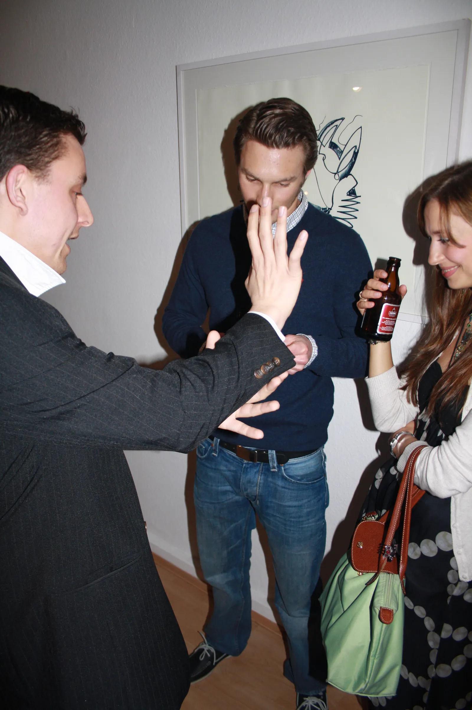
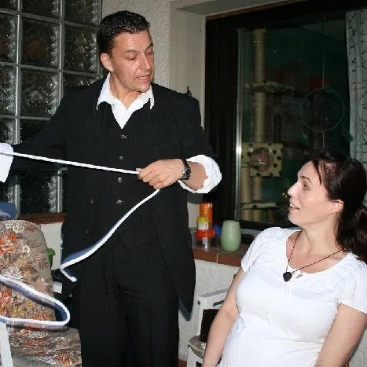
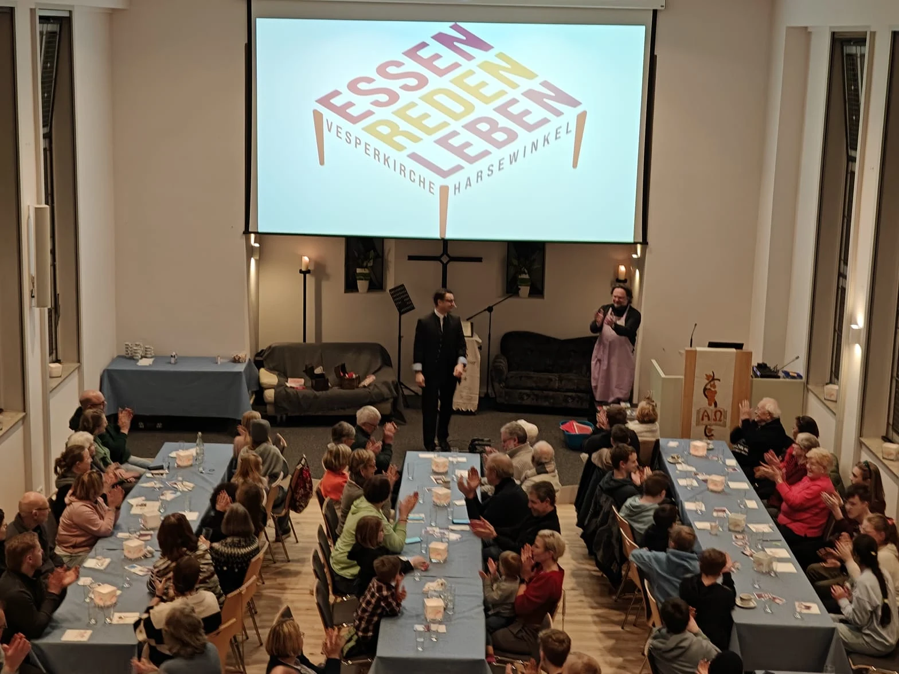
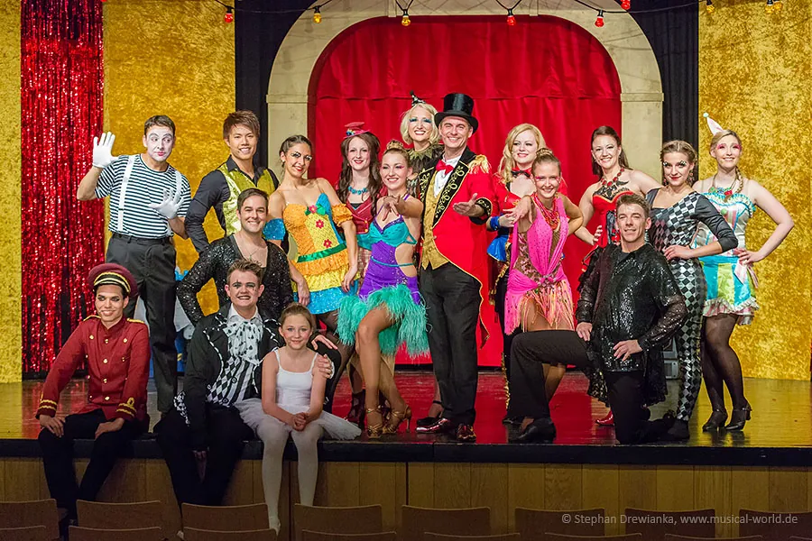
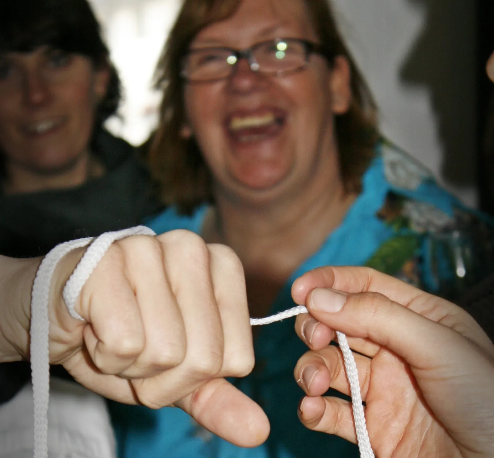

Close-up
Verblüffende Tricks direkt vor Ihren Augen – Magie hautnah in kleinen Gruppen.
- Galadinner & Empfänge
- Tischzauberei am Platz
- Walk-Act durch die Location
Elegant, charmant, verblüffend – Zauberkunst aus Frankreich, die Ihre Gäste von der ersten Sekunde an in ihren Bann zieht.
„Zaubern können viele – verzaubern aber nicht."
Ob intime Tischzauberei, mitreißende Bühnenshow oder strahlende Kinderaugen – jede Darbietung wird individuell auf Ihre Veranstaltung abgestimmt.

Verblüffende Tricks direkt vor Ihren Augen – Magie hautnah in kleinen Gruppen.

Eine professionelle Stand-up-Zaubershow, die Ihr gesamtes Publikum in den Bann zieht – Comedy, Illusion & Interaktion.

Lachen, Staunen, Mitmachen! Eine interaktive Kindershow mit Clownerie & Magie – jedes Kind wird selbst zum Zauberer.
Geboren in Frankreich, verwurzelt im Ruhrgebiet: Ich verbinde internationales Flair mit der Zuverlässigkeit und Pünktlichkeit, die Sie von einem deutschen Entertainer erwarten – perfekt zweisprachig (DE/FR) für internationale Events.
Mit über 5000 begeisterten Gästen seit 2010 und mehr als 15 Jahren Erfahrung weiß ich genau, wie ich Ihr Publikum verzaubere. Jede Show ist einzigartig und auf Ihre Veranstaltung zugeschnitten – transparente Preise, keine versteckten Kosten.

Ein Blick auf Auftritte bei Galas, Firmenfeiern, Hochzeiten und Kinderfesten in ganz NRW.

Firmenfeier
Bühne & Close-up
Zaubershow
Musical
Private FeierWir hatten den Zauberer LIAR zum Geburtstag unseres Enkelkindes gebucht. Er erschien super pünktlich und zog alle Gäste, insbesondere die Kinder, in seinen Bann. Außerordentlich zufrieden – uneingeschränkt zu empfehlen!
Ein außergewöhnlich guter Künstler, der es versteht, seine Gäste – egal ob jung oder alt – zu verzaubern. Erstaunliche Tricks, die man nicht durchschaut. Und er kommt auch an die Tische. Wärmstens zu empfehlen!
Super sympathischer Zauberer, der sein Publikum in jedem Alter unterhält und zum Staunen bringt. Schon mehrmals gebucht, immer neue Tricks und Witze. Kann super mit Kindern umgehen. Nur weiterzuempfehlen.
Weihnachtsfeier, Jubiläum, Produktpräsentation oder Messestand – lockere Stimmung und Wow-Effekt, während des Dinners oder als Bühnenprogramm.
50–500 GästeNiveauvolle Unterhaltung mit französischer Eleganz. Diskret, professionell und perfekt auf gehobene Anlässe abgestimmt.
Galadinner · Charity · PreisverleihungGeburtstag, Hochzeit oder Junggesellenabschied – die richtige Mischung aus Humor und verblüffender Magie. Interaktiv & charmant.
20–150 PersonenClownerie, Zauberei und viel Interaktion für Kinder von 4–12 Jahren. Ballonmodellage & Glitzertattoos runden das Programm ab.
45 Min Show + ExtrasVon Gladbeck aus bin ich in ganz NRW unterwegs – besonders häufig in diesen Städten im Ruhrgebiet und am Niederrhein:
Sie planen ein besonderes Event im Ruhrgebiet und suchen erstklassiges Entertainment? Rufen Sie direkt an oder schreiben Sie mir.